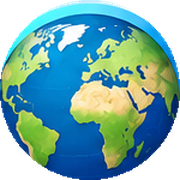

LEARNING HUB
Ge

TrainerGeografía, historia y viajes en un solo lugar.
Explora, practica y aprende sobre el mundo a tu ritmo.
Elige qué quieres explorar
Geografía
•
Historia
•
Viajes
🗺️
Próximamente
Este apartado está preparado para añadir contenido más adelante.
Sección preparada
Podremos construir aquí los ejercicios cuando quieras.
🇪🇸
Capitales de provincia
¿Cómo quieres practicar?
Configurar partida
Capitales
Todo el mundo
Pregunta 1
⏱ 10 s
✅ 0
❌ 0
Pregunta
🗺️ ¿Dónde está?
El país preguntado está señalado en rojo.
¡Buen ritmo!
Llevas 15 preguntas. ¿Quieres seguir practicando?